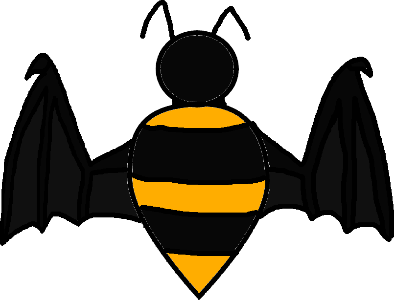

Hello and welcome to the Bumblebee Ahh Moment (BAM) Website.
Bumblebee Ahh Moment is a fan-fiction comic series based off of the book series Wings of Fire. (The dragon one, not that weird other one that keeps popping up when I search for it.) Bumblebee Ahh Moment uses a mix of characters from the normal Wings of Fire books, like Blue, Cricket, and Bumblebee, and some original characters such as Silver or Dr. Sawblade. Most of the series takes place in Pantala, the second continent introduced in Wings of Fire. Bumblebee Ahh Moment is a collection of stupid comics and weird story lines. If you decide to read the series, I hope that you enjoy!
On the Bumblebee Ahh Moment Website you can view and download all of the comics for free. To read one of the books, simply click on it's respective link on the navigation bar.
why does this section exist?